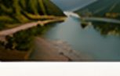

9:41
Marşrutlar
Hamısı
1 gün
2–3 gün
1 həftə+
Sənin marşrutların
Hamısına bax
Şahdağ qaçışı
3 gün • Quba, Qusar, Şahdağ
2/5 məkan tamamlandı
Davam et
Tövsiyə olunan marşrutlar
Daha çox
Quba – Qusar təbiət turu
2 gün • Təbiət, Macəra
4.9
(142)
Bakı mədəniyyət marşrutu
1 gün • Tarix, Mədəniyyət
4.8
(96)

Lənkəran sahil marşrutu
2 gün • Dəniz, Təbiət
4.7
(88)
Quba – Dağlar turu
3 gün • Dağ, Kənd
4.9
(210)
Öz marşrutunu yarat · +350 XP
Discover
Explore
Trips
Profile